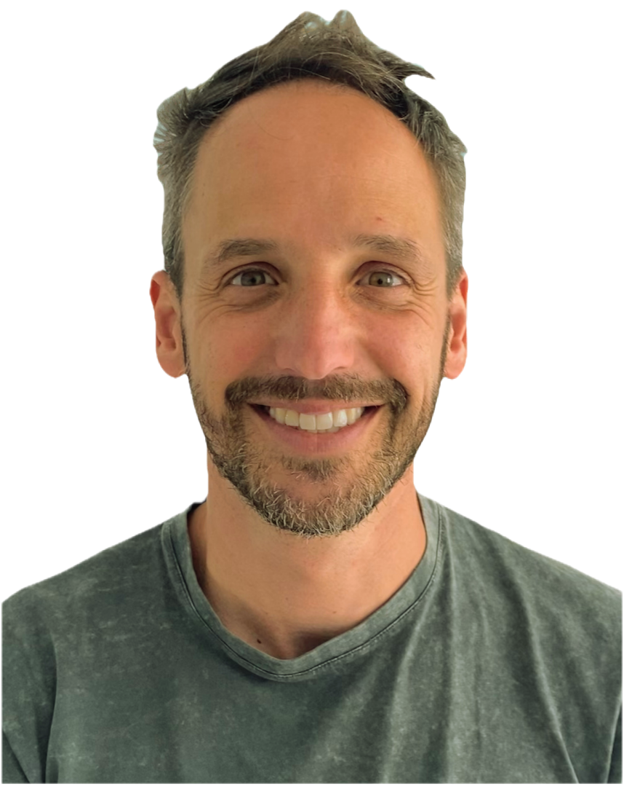

Pablo Quintero
Nutrición metabólica y longevidad
Doctor en Nutrición
Acompañamiento nutricional basado en evidencia para mejorar alimentación, composición corporal, actividad física y hábitos sostenibles.

Solicitar primera consulta
La primera consulta permite entender tu situación y valorar cuál es el mejor camino de trabajo.
Enfoque
No trabajo con dietas universales, reglas imposibles ni soluciones de una semana. La alimentación importa, pero forma parte de un conjunto más amplio: actividad física, entrenamiento, descanso, horarios, entorno y relación con la comida.
El objetivo es construir una estrategia que encaje en tu vida real y te ayude a tomar mejores decisiones con el tiempo.
Áreas de atención
Para personas que quieren mejorar su alimentación, composición corporal, energía, actividad física y factores de riesgo metabólico.
Podemos trabajar sobre estructura de comidas, saciedad, calidad de la alimentación, entrenamiento, recuperación, sueño y hábitos. Cuando resulta útil, consideramos analíticas y pruebas que ya formen parte de tu atención sanitaria.
El foco no es una intervención perfecta durante unos días, sino cambios con sentido que puedas mantener.
Acompañamiento para niños, adolescentes y familias cuando hay preocupaciones relacionadas con alimentación, peso, crecimiento, actividad o hábitos.
El trabajo se centra en el entorno familiar: rutinas, comidas, actividad, descanso y bienestar. Evitamos culpabilizar, etiquetar o imponer dietas restrictivas.
Cuando es necesario, la atención se coordina con pediatría u otros profesionales.
Atención nutricional cuando existe una condición médica, síntomas o un tratamiento que requiere adaptar la alimentación.
Incluye especialmente situaciones digestivas y metabólicas en las que una estrategia nutricional individualizada puede ser relevante.
La consulta nutricional no sustituye el diagnóstico ni el tratamiento médico. Si hace falta, se trabaja en coordinación con el equipo sanitario.
Solicitar primera consulta
Cómo trabajo
La primera consulta no empieza con un menú. Empieza por entender qué está ocurriendo: tus objetivos, historia relevante, alimentación, hábitos, actividad física, descanso y contexto clínico. A partir de ahí, definimos prioridades realistas y un plan de acción que podamos revisar y ajustar.
Revisamos tu situación actual, objetivos, antecedentes relevantes, alimentación, actividad y contexto.
Elegimos los cambios que tienen más sentido para ti. Menos reglas; más claridad sobre qué hacer y por qué.
Si lo necesitas, establecemos un proceso de seguimiento para revisar avances, obstáculos y adaptar la estrategia.
El objetivo es que desarrolles criterio y herramientas para cuidar tu alimentación y tu salud sin depender de planes rígidos.
En estas circunstancias, puedo orientarte para coordinar o derivar al recurso adecuado.
Sobre mí
Soy Pablo Quintero, nutricionista y Doctor en Nutrición.
Mi trabajo combina una visión científica de la nutrición con una idea sencilla: las decisiones que más importan son las que puedes repetir durante años.
Mi enfoque integra alimentación, composición corporal, actividad física, entrenamiento, descanso y contexto clínico. No persigo la perfección ni aplico protocolos universales; busco entender qué puede ayudarte a avanzar de forma segura y sostenible.
Trabajo desde mi consulta en Santa Cruz de Tenerife.
Doctor en Nutrición. La consulta se centra en nutrición y no sustituye la valoración, el diagnóstico ni el tratamiento médico.
Si quieres mejorar tu alimentación, salud metabólica o hábitos con un enfoque individualizado y basado en evidencia, ponte en contacto. La primera cita sirve para conocer tu situación, responder tus dudas y decidir si tiene sentido trabajar juntos.
Solicitar primera consulta
Si tienes analíticas recientes o informes médicos relevantes, puedes traerlos a la consulta. Los utilizaremos únicamente cuando ayuden a orientar decisiones nutricionales. La consulta nutricional no sustituye la valoración médica.
No. El peso puede ser un objetivo relevante para algunas personas, pero no es el único indicador de salud. También trabajamos alimentación, composición corporal, actividad, rendimiento, recuperación, salud metabólica, salud digestiva y hábitos.
No utilizo un enfoque único ni menús rígidos como punto de partida. El plan se adapta a tus necesidades, preferencias, horarios, contexto familiar y objetivos. Cuando es útil, puede incluir ejemplos de estructura de comidas o recursos prácticos.
Sí, mediante un enfoque centrado en la familia, el crecimiento, los hábitos y el bienestar. La participación de padres, madres o tutores es necesaria y, cuando procede, se coordina la atención con pediatría u otros profesionales.